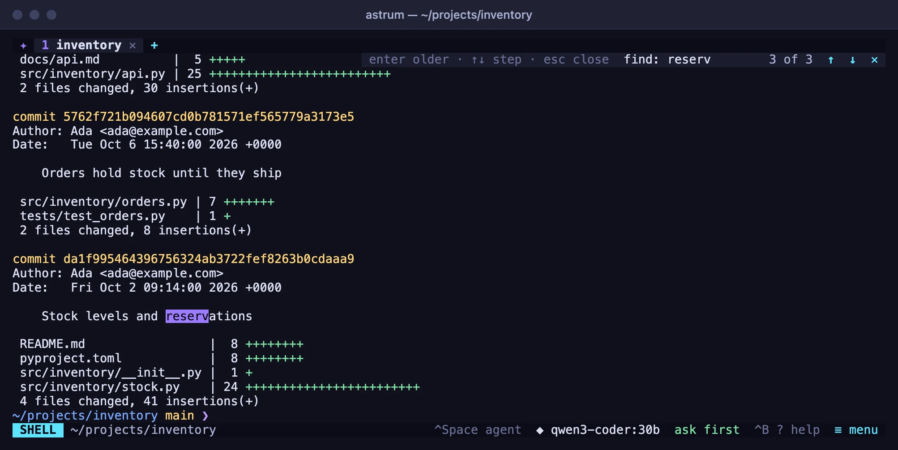
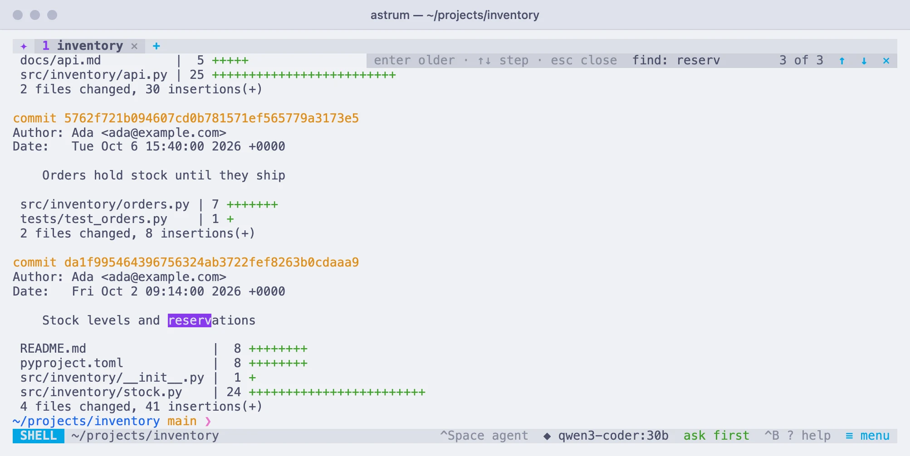

Tabs and panes
Open, name and move tabs, split them into panes, search and copy the scrollback, follow links, and see the pictures programs print.
Tabs
Each tab has a shell of its own, which keeps running whether you are looking at it or not.
| Do this | With the mouse | With the keyboard |
|---|---|---|
| New tab | click + in the tab bar, or right-click a tab → New tab | Ctrl+B c |
| Go to a tab | click it | Ctrl+B 1 to 9 |
| Next or previous tab | turn the mouse wheel over the tab bar | Ctrl+B n / p |
| Rename a tab | right-click it → Rename | Ctrl+B , |
| Move a tab | drag it along the tab bar, or right-click it → Move left / Move right | Ctrl+B < / > |
| Close a tab | click its ✕, middle-click it, or right-click it → Close tab | exit in its shell, or Ctrl+B x in its last pane |
Opening a tab
A new tab starts in the directory of the pane you were in, so + is the quick way to get a second shell in the same project. A new tab opened from a tab on another machine is on this machine; to open another there, use ≡ menu → New tab on another machine… again.
Going to a tab
Click it. Turning the mouse wheel over the tab bar steps through the tabs, one at a time, and wraps around at the ends. With the keyboard, Ctrl+B n and Ctrl+B p go to the next and previous tab, and Ctrl+B and a number from 1 to 9 goes straight to that one. In a tab split into panes, Ctrl+B → past the right-most pane goes on to the next tab, and Ctrl+B ← past the left-most to the previous one.
Naming a tab
A tab names itself after what it is doing: the program running in it if there is one, otherwise the last part of the directory its shell is in, otherwise the title its program gave it. A tab on another machine says which machine first, as in web-3: src.
To give it a name of your own, right-click it and choose Rename (or press Ctrl+B ,), type the name and press Enter. Esc leaves it as it was. A name you give stays with the tab, through restarts too. Rename it to nothing at all and it goes back to naming itself. /rename name in the agent panel does the same.
Moving a tab
Press on a tab, hold the button, and drag it along the tab bar: it takes the place of each tab it passes over. Right-click a tab for Move left and Move right, or press Ctrl+B < and Ctrl+B > to move the tab you are in.
Closing a tab
Click the tab's ✕, middle-click the tab, or right-click it and choose Close tab. The tab closes at once, and its shells end along with whatever was running in them. Typing exit in a tab's only shell closes it too.
Closing the last tab ends the session for good: nothing of it is kept, and the next astrum starts a fresh one. To leave with everything still running, detach instead. See Sessions that come back.
What the tab bar shows
A tab can carry a mark before its name, so that you know what is going on in tabs you are not looking at:
| Mark | Means |
|---|---|
| a spinner | the tab's agent is at work |
? | the tab's agent is asking you something |
✓ | the tab's agent finished while you were in another tab |
✗ | the tab's agent stopped with an error while you were in another tab |
●, in the accent color | something happened there while you were away: a command finished, or a program rang the bell |
●, in yellow | a command is running there |
The marks for what happened while you were away go once you look at the tab. If there are more tabs than fit, the bar ends with …. In a named session, the session's name is at the right-hand end of the bar. Several agents at once has more on following the agents of several tabs.
Panes
A tab can be split into panes, each with a shell of its own, and split again as often as there is room.


| Do this | With the mouse | With the keyboard |
|---|---|---|
| Split side by side | right-click the pane → Split right, or ≡ menu → Split right | Ctrl+B | or % |
| Split one above the other | right-click the pane → Split down, or ≡ menu → Split down | Ctrl+B - or " |
| Move between panes | click the pane | Ctrl+B and an arrow key |
| Resize panes | drag the divider between them | |
| Zoom one pane to fill the tab, and back | right-click it → Zoom / Unzoom, or ≡ menu → Zoom pane | Ctrl+B z |
| Close a pane | right-click it → Close pane | Ctrl+B x, or exit in its shell |
Splitting
Split right puts a new pane to the right of the one you are in, and Split down puts one below it; each takes half the space. The new pane's shell starts in the directory of the pane it was split from, and the keyboard goes to it. In a tab on another machine, the new pane is on that machine too. When a pane is too small to halve, Astrum says there is not enough room.
Moving between panes
Click a pane to type in it. With the keyboard, Ctrl+B and an arrow key moves to the pane in that direction. The divider is lit along the pane the keyboard is in.
The mouse wheel scrolls whichever pane it is over, without moving the keyboard there, so you can look back through one pane while typing in another.
Resizing
Press on the line between two panes and drag it. The panes on either side grow and shrink as you go, and the programs in them are told their new size.
Zooming
Zoom lets one pane fill the whole tab for a while; the others are hidden, not stopped, and carry on running. The status bar says so while it lasts (⤢ zoomed · 1 of 3 panes). Right-click and choose Unzoom, or press Ctrl+B z again, to bring them back. Splitting a zoomed tab brings the others back first. Zoom is only offered in a tab with more than one pane.
Closing a pane
Right-click the pane and choose Close pane, press Ctrl+B x, or type exit in its shell. Its shell ends, and the pane next to it takes the space. Closing the last pane of a tab closes the tab.
The agent and panes
The agent works in one pane at a time: the one the keyboard was in when you asked it something. It stays there until it has finished, so you can move to another pane and carry on while it works. After that it follows the keyboard again. See The agent.
Scrollback
Each pane remembers the last 10,000 lines its programs printed. scrollback in the config file changes that; the change applies to shells started afterwards.
| Do this | With the mouse | With the keyboard |
|---|---|---|
| Scroll back and forward | turn the mouse wheel over the pane | Shift+PageUp / Shift+PageDown, or Ctrl+B PageUp / PageDown |
| Back to the bottom | scroll down, or start typing | any key typed into the shell |
A full-screen program (an editor, a pager) has the screen to itself. If it uses the mouse, the wheel goes to it; if it does not, the wheel is sent to it as arrow keys, so a pager such as less scrolls with the wheel too.
Finding text
The search looks through everything a pane still remembers, newest first, and finds as you type.
| Do this | With the mouse | With the keyboard |
|---|---|---|
| Open the search | right-click the pane → Find…, or ≡ menu → Find in scrollback | Ctrl+B / |
| Next older match | click ↑ on the search bar | Enter or ↑ |
| Next newer match | click ↓ | ↓ |
| Close the search | click ✕ | Esc |
The matches are lit up in the pane, and the bar says which one you are on and how many there are (3 of 12), or that there is no match. Small letters find capitals too; a capital letter in what you type makes the search exact. Backspace takes back a letter, Ctrl+U clears the text, and pasting puts the pasted text into the search.
Pressing Tab keeps the search and turns it into copy mode: n and N then step to the older and newer matches, v starts selecting, y copies, and q leaves. Click the search text to type in it again.


Copying text
With the mouse:
- Drag across text to select it. When you let go, it is copied, and Astrum says how many characters.
- Double-click a word to select it, and click a third time for the whole line.
- Drag past the top or bottom of the pane and it scrolls, so a selection can reach into the scrollback.
- Click anywhere else to let go of the selection.
Copied text is handed to your terminal app's clipboard (that also works over SSH, where the terminal lets programs set the clipboard), and to the clipboard tool of the machine astrum runs on: pbcopy on macOS, wl-copy or xclip on Linux. ASTRUM_CLIPBOARD_TOOL, set before starting astrum, names another program to hand it to, or none to leave copying to the terminal alone.
To keep a selection from being copied the moment you let go, turn off ≡ menu → Settings → Copy text as soon as it is selected (copy_on_select = false in the config file).
Paste the way you always do in your terminal app. What you paste goes to wherever the keyboard is: the shell, the agent panel, or a search.
In programs that use the mouse
Programs such as vim and htop handle the mouse themselves and get your clicks and drags as usual. Hold Shift while you drag to select text inside them with Astrum's selection instead, and hold Shift while you right-click to get Astrum's menu rather than theirs.
Copy mode
Copy mode is the keyboard's way to select text. Press Ctrl+B [, or click ≡ menu → Select with the keyboard. A COPY chip appears on the bar, and a cursor in the pane that moves through the screen and the scrollback. Nothing typed in copy mode reaches the shell.
| Key | Does |
|---|---|
| arrows, or h j k l | move the cursor |
| w / b / e | to the next word, the word before, the end of the word |
| W / B / E | the same, with words separated only by spaces |
| 0 / $, or Home / End | to the start or end of the line |
| ^ | to the first character on the line that is not a space |
| H / M / L | to the top, middle or bottom of the pane |
| { / } | to the paragraph before or after |
| % | to the matching bracket |
| g / G | to the oldest or the newest line |
| PageUp / PageDown | a page back or forward |
| Ctrl+U / Ctrl+D | half a page back or forward |
| v or Space | start selecting at the cursor |
| V | select whole lines |
| Ctrl+V | select a block |
| y or Enter | copy the selection and leave |
| / | search, as in Finding text |
| n / N | the next older or newer match |
| q or Esc | leave (Esc first lets go of a selection, if there is one) |
A click in the pane moves the cursor there. The ✕ on the bar leaves copy mode, and so does Ctrl+B [ again.
Links
A web address in a pane can be followed, and so can a link a program marked as one (ls --hyperlink, gh, compilers that link to their documentation). Point at it and the status bar shows where it really goes, which for a marked link may not be what its text says.
- Right-click it for Open link and Copy link.
- Or hold Ctrl and click it.
Some terminals keep Ctrl-click for themselves (macOS Terminal is one); there, the right-click is the way.
Astrum opens web and mail links and nothing else, with the system's own open (macOS) or xdg-open (Linux) on the machine where you ran astrum. A link to a file is not opened, because opening a file can mean running it; it can still be copied. ASTRUM_OPEN_TOOL names another program to open links with, or none.
Pictures
A picture a program prints is shown in the pane: imgcat, kitten icat, chafa, img2sixel, or a plotting library that draws to the terminal. It scrolls with the text around it, is cleared with it, and is there again when you look back through the scrollback.
Programs send pictures in three ways (iTerm2's, kitty's and sixel), and Astrum understands all three. Each attached terminal is sent the picture in a way that terminal has:
| Your terminal | What it is shown |
|---|---|
| iTerm2, WezTerm | everything, except raw pixels a program sent compressed in kitty's way |
| Ghostty, kitty | pictures sent in kitty's way, and PNG files sent in iTerm2's |
| A terminal that only draws sixel | sixel pictures |
| macOS Terminal, and others with no pictures | a line saying what the picture is |
Where a picture cannot be shown, a faint block the size it would have been takes its place, with a line such as PNG 640×480 · this terminal cannot show it. The same block stands in while a picture is partly off the edge of its pane or under a menu: a terminal cannot be asked to draw part of a picture, so it is drawn whole or not at all. A picture is drawn once it has been still for a moment, not at every line while output is pouring past.
Things to know:
- A program finds out whether pictures work by asking, and is answered for the terminal you are using at that moment. One that decides from the terminal's name sees
TERM_PROGRAM=astrumand may need telling which way to use (chafa -f kitty, for example). - Astrum passes pictures on and does not decode them, which is why some pairs in the table are missing: a JPEG cannot be turned into what kitty's way needs, and nothing can be turned into sixel.
- Moving pictures drawn as one frame after another, such as a video played in the terminal, are not shown: no frame stays still long enough.
- Sixel is drawn pixel for pixel, so it is shown only on a terminal that says how large its cells are. After changing your terminal's font size, detach and attach again before printing pictures, or they are sized for the old one.
- Pictures are not saved with the session, and the agent is not shown them: it is told
[PNG 640×480]in their place. images = falsein the config file turns pictures off; the line saying what each one is stays. If Astrum is wrong about your terminal, the environment variableASTRUM_IMAGES, set before startingastrum, says outright which ways it has:kitty,iterm,sixel, several with commas, ornone.
Several windows on one session
The same session can be open in several terminal windows at once: run astrum in another window (with -s name for a named session). Each window has its own view of the session: its own tab in front, its own menus, drawn edge to edge at its own size. So one window can stay on a build while another edits in a different tab.
Two windows looking at the same tab share it: what is typed in one shows in the other. A tab's shells can only have one size, so they are sized for the window that used the tab last. The other window shows the tab at that size, with dots where it does not reach, until a key or a click in that window brings the tab over to its own size.
Each window is sent pictures in the way its own terminal can show them. Ctrl+B d detaches the window you are in; Ctrl+B D detaches every window from the session. See Sessions that come back.